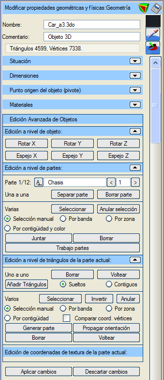
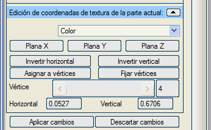
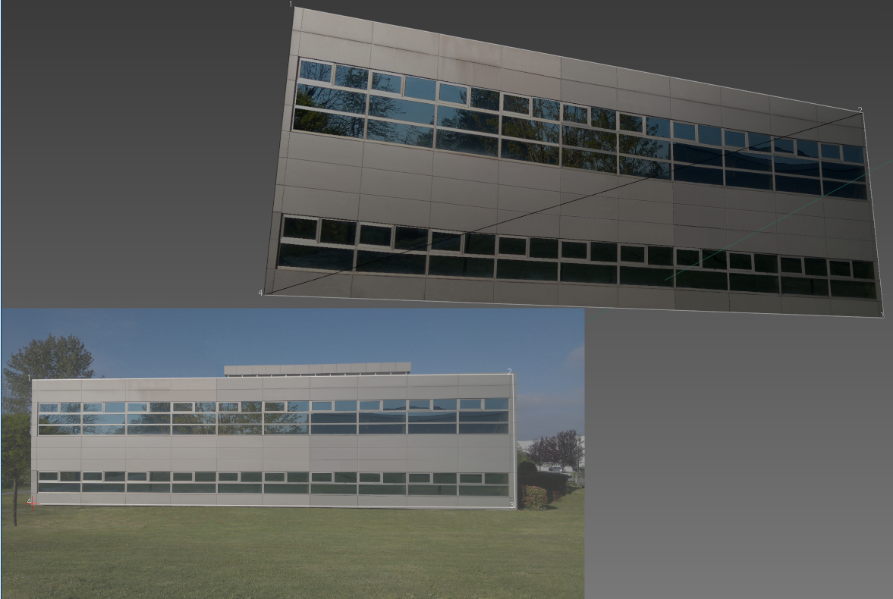
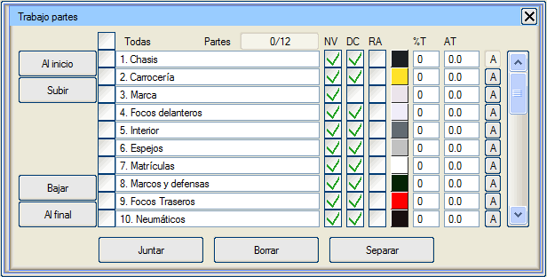
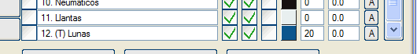

| |
|
Nesnelerin Gelişmiş Düzenlemesi için Genel Seçenekler
|
|
Genel Bilgiler Nesnelerin gelişmiş düzenlemesi, sahnenin ihtiyaçlarını karşılamak üzere nesneleri değiştirmeyi veya uyarlamayı sağlayan bir dizi araç içerir. Bu araçlar temel olarak nesnenin geometrik özelliklerini, rengini, aydınlatmasını ve doku kaplamasını etkiler. Özellikle renk veya doku özelliklerini kaydetmeyen formatlardan nesne içe aktarıldıktan sonra kullanışlıdır. Ayrıca, üçgenlerin renk veya malzeme atanabilecek parçalar halinde düzenlenmediği veya sınıflandırılmadığı nesneler için de faydalıdır. Aynı zamanda gereksiz geometrileri silmeye, camlara şeffaflık uygulamaya, üçgenleri yönlendirmeye olanak tanır... Geometrinin üçgenlerinin doğru yönlendirilmesi, yalnızca dış yüzeylerinin çizilmesini sağlayarak bilgisayarın grafik sistemleri için önemli bir iş yükünden tasarruf sağlar. Gelişmiş düzenleme seçeneğine tıklandığında, nesnenin alışılmış özellik seçenekleri daraltılır ve nesnenin gelişmiş seçeneklerine yer açılır. Ancak bu düzenleme modundan çıkmadan istenildiği zaman bu özellikler tekrar genişletilebilir. 3B görüntüleyicide bu nesne tek başına görünür. Gelişmiş düzenleme, geometri veya doku kaplaması üzerinde yapılabilir. Geometri üzerinde üç seviyede gerçekleştirilir: Gelişmiş doku kaplama, nesnenin köşe noktalarının doku koordinatlarının düzenlenmesi aracılığıyla yapılır. Gelişmiş düzenleme modundan, tekrar gelişmiş düzenleme butonuna basarak veya "Esc" tuşuna basarak çıkılır. O anda, eğer varsa, daha önce uygulanmamış veya reddedilmemiş değişiklikleri uygulaması veya reddetmesi kullanıcıdan istenir. Gelişmiş Düzenleme Geometri  Nesneler, geometriyi nesnenin kendisini döndürmeden döndürerek veya yansıtarak değiştirilebilir: X Döndür, Y Döndür, Z Döndür: nesnenin kendisini döndürmeden, geometrisini sırasıyla X, Y ve Z eksenlerine göre 90 derece döndürür. X Aynala, Y Aynala, Z Aynala: nesnenin köşe noktalarının sırasıyla X, Y veya Z koordinatlarını yansıtır. Parçalar teker teker veya gruplar halinde değiştirilebilir. Teker Teker. İsimleri değiştirilebilir ve "<" ve ">" butonlarıyla aralarında gezilebilir. Parçayı Ayır: mevcut parçayı nesneden çıkarır ve onunla, düzenlenmekte olan nesneye hiyerarşik olarak bağlı başka bir nesne oluşturur. Parçayı Sil: nesnenin mevcut parçasını siler. Çoklu. Seç (Manuel, Şerit ile, Alan ile, Bitişikliğe ve Renge Göre): parça seçme modunu etkinleştirir. Üzerlerinde daha sonra işlem yapmak üzere birden fazla parça seçmeyi sağlar. Bu moddan "Esc" tuşuna basarak çıkılır. Çoklu parça seçimi çeşitli şekillerde yapılabilir:
Birleştir: seçilen tüm parçaları tek bir parçada birleştirir. Sil: seçilen tüm parçaları siler. Parçalarla Çalışma: Parçalarla çalışma için gelişmiş menüyü gösterir. Üçgenler teker teker veya gruplar halinde değiştirilebilir. Teker Teker. Sil: üçgen silme modunu etkinleştirir. Bu modda, imleçle üzerine tıklanan üçgenler silinir. Bu moddan "Esc" tuşuna basarak çıkılır. Ters Çevir: üçgenlerin yönünü değiştirme modunu etkinleştirir. Bu modda, imleçle üzerine tıklanan üçgenin köşe noktalarının sırası değiştirilir. Böylece o üçgenin ön ve arka yüzleri yer değiştirir. Bu moddan "Esc" tuşuna basarak çıkılır. Üçgen Ekle (Bağımsız, Bitişik): üçgen ekleme modunu etkinleştirir. Bunlar, üçgen nesneleri oluştururken olduğu gibi bağımsız veya bitişik olabilir. Bu moddan "Esc" tuşuna basarak çıkılır. Çoklu. Seç (Manuel, Şerit ile, Alan ile, Bitişikliğe Göre): üçgen seçme modunu etkinleştirir. Üzerlerinde daha sonra işlem yapmak üzere birden fazla üçgen seçmeyi sağlar. Bu moddan "Esc" tuşuna basarak çıkılır. Çoklu üçgen seçimi çeşitli şekillerde yapılabilir:
Üçgen seçme yöntemini, seçim modundan çıkmadan değiştirmek mümkündür. Üçgen seçim modundan çıkılsa bile, seçili kalmaya devam ederler. Seçimi Ters Çevir: seçili olmayan üçgenleri seçili, seçili olanları ise seçilmemiş olarak işaretler. Hiçbir üçgen seçili değilse, hepsini seçer. Hepsi seçiliyse, seçimi kaldırır. İptal Et: tüm üçgenleri seçilmemiş olarak işaretler. Parça Oluştur: seçilen üçgenlerle bir nesne parçası oluşturur. Yönelimi Yay: seçilen üçgenin yönelimini tüm bitişik üçgenlere yayar. Sil: seçilen üçgenleri siler. Ters Çevir: seçilen üçgenlerin yönelimini değiştirir. Köşe Noktasına Göre Doku Kaplama Kullanılan malzeme "köşe noktasına göre doku kaplama" modunda uygulanan dokulara sahipse, her bir köşe noktasına doku koordinatları atanabilir. Bu tür doku kaplama, bir fotoğrafı bir nesnenin dokusu olarak kullanmak için kullanılır. Fotoğraf, geometriye uyum sağlamak için "esnetilir" veya "daraltılır". Renk dokularıyla çalışır. X Düzlemsel: doku koordinatlarını, görüntü (fotoğraf) X ekseninden yapıştırılıyormuş gibi atar. Y Düzlemsel: doku koordinatlarını, görüntü (fotoğraf) Y ekseninden yapıştırılıyormuş gibi atar. Z Düzlemsel: doku koordinatlarını, görüntü (fotoğraf) Z ekseninden yapıştırılıyormuş gibi atar. Bu butonlar, sonucun bir önizlemesini yapmak ve dokunun nasıl uygulanabileceğine dair ipuçları vermek için kullanılır. Yatay Ters Çevir: görüntünün sol kısmının nesnenin sağ kısmına geçmesi ve tersi için nesnenin doku koordinatlarını değiştirir. Dikey Ters Çevir: görüntünün üst kısmının nesnenin alt kısmına geçmesi ve tersi için nesnenin doku koordinatlarını değiştirir. Köşe Noktalarına Ata: görüntü piksellerini nesne köşe noktalarına atama modunu açar. Bu modda, sırayla görüntüdeki piksellere ve nesnedeki köşe noktalarına tıklanır. Aradaki köşe noktaları, enterpole edilmiş doku koordinatları alır. Bu moddan "Esc" tuşuna basarak çıkılır. Köşe Noktalarını Sabitle: doku koordinatları yeniden atanmayacak olan köşe noktalarını seçme modunu açar. Bu modda, doku kaplanacak nesne üzerindeki köşe noktaları 3B görüntüleyicide üzerlerine tıklanarak seçilir. Bu moddan "Esc" tuşuna basarak çıkılır. Köşe Noktası: seçilen köşe noktaları listesindeki indeksi belirtir. Yatay: seçilen her bir köşe noktasına atanan yatay doku koordinatını belirtir; 0.0 ile 1.0 arasında değerler alır (0.0 görüntünün en solundaki piksel sütunu, 1.0 görüntünün en sağındaki piksel sütunu). Dikey: seçilen her bir köşe noktasına atanan dikey doku koordinatını belirtir; 0.0 ile 1.0 arasında değerler alır (0.0 görüntünün en üstteki piksel satırı, 1.0 görüntünün en alttaki piksel satırı).

Değişiklikleri Uygula: nesne üzerinde yapılmış olası değişiklikler geçicidir. Bu buton onları kalıcı hale getirir.Resimde, nesneyi doku kaplamak için kullanılan pikseller ve köşe noktaları gösterilmektedir. Değişiklikleri Geri Al: nesne üzerinde yapılmış olası değişiklikler geçicidir. Bu buton onları reddeder. Parçalarla Çalışma Parçalarla çalışma, birçok parçanın özelliklerini aynı anda görmeye ve hızlıca değiştirmeye yarar. Ayrıca bir nesnenin parçalarını sıralamaya da yarar. Sanal 3B, gerçek zamanlı çizim için, şeffaf nesneleri kameraya olan mesafelerine göre sıralar; böylece önce en uzaktaki opak nesneler, sonra en uzaktaki şeffaf nesneler ve son olarak en yakındaki şeffaf nesneler çizilir. Bu sayede şeffaf nesneler, "Z-buffer" sorunları nedeniyle opak nesnelerin çizilmesini engellemez. Bir nesne içinde bu sıralamayı kullanıcının yapması gerekir. 
Parçalarla Çalışma Menüsü  Son parça, şeffaflığı olan camlardır. Şeffaflığı olan parçalar listede otomatik olarak "(T)" ile işaretlenir. Tümü: bu kutucuk, tüm parçaları seçili veya hiçbiri seçilmemiş olarak işaretler. Onu takip eden kutucuk sütunu, her bir parçanın seçim durumunu belirtmeye ve değiştirmeye olanak tanır. Parçalar: her an kaç parçanın seçili olduğunu belirtir. Altında her bir parçanın adını ve sırasını içeren sütun bulunur. Köşe Başına Normal (NV): bu sütundaki kutucuklar, her bir parçanın üçgenlerinin normal türünü belirtir ve değiştirir. Çift Yüzeyli (DC): bu sütundaki kutucuklar, her bir parçanın üçgenlerinin bir mi yoksa iki yüzünün mü çizileceğini belirtir ve değiştirir. Gelişmiş Render (RA): bu sütundaki kutucuklar, her bir parçayı çizmek için "shader" kullanılıp kullanılmayacağını belirtir ve değiştirir. Renk Butonları: her bir parçanın rengini belirtir ve ayarlar. Şeffaflık Yüzdesi (%T): bu sütundaki kutucuklar, her bir parçanın üçgenlerinin şeffaflık yüzdesini belirtir ve ayarlar. Doku Açısı (AT): bu kutucuklar, her bir parçanın malzemelerine uygulanan dokuların dönüş açısını belirtir ve ayarlar. Mevcut Parça (A): bu sütundaki butonlar, özellikler menüsünde hangi parçanın gösterildiğini belirtir veya ayarlar. En Başa: seçilen parçaları listenin başına taşır ve mevcut sıralarını korur. Yukarı Taşı: seçilen parçaları, seçilen ilk parçanın bir üst pozisyonuna taşır ve mevcut sıralarını korur. Aşağı Taşı: seçilen parçaları, seçilen son parçanın bir alt pozisyonuna taşır ve mevcut sıralarını korur. En Sona: seçilen parçaları listenin sonuna taşır ve mevcut sıralarını korur. Birleştir: seçilen parçaları ilk seçilen parça ile birleştirir. İlk parçanın özelliklerini korur. Sil: seçilen parçaları siler. Ayır: seçilen parçaları düzenlenmekte olan nesneden ayırır. |